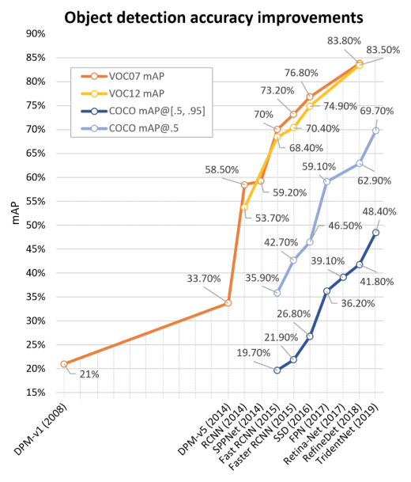

Object Detection and Semantic Segmentation Metrics
Contents
2.1. Object Detection and Semantic Segmentation Metrics#
NOTE: The following example is based on here and its corresponding implementation
In this section we provide some intuition as to why we need additional metrics for detection and segmentation of objects. As shown below such metrics are routinely used to compare various networks and approaches and manifest the progress that was made in the field over the last few years.
 Detection performance
The above figure is dated but its indicative of the relative effort required to improve performance in MS COCO which is one of the most challenging datasets. See [here] for the latest leaderboard. You can expand each entry and you can then click on the corresponding method that is behind the result. There are also per class benchmarks if your detection problem involves only a subset of the classes of MS COCO.
2.1.1. What is the Average Precision (AP) metric#
The average precision is introduced in the next two videos. It is also calculated using a small detection example in a subsequent section.
The AP is the approximation of the Area Under the Curve (AUC). This approximation involves interpolation that eliminates the noisy Precision vs Recall curve - effectively converting this curve to a monotonic curve. This is shown next.
2.1.2. A practical example#
Considering the set of 12 images in the figure below:

Each image, except (a), (g), and (j), has at least one target object of the class cat, whose locations are limited by the green rectangles. There is a total of 12 target objects limited by the green boxes. Images (b), (e), and (f) have two ground-truth samples of the target class. An object detector predicted 12 objects represented by the red rectangles (labeled with letters A to L) and their associated confidence levels are represented in percentages. Images (a), (g), and (j) are expected to have no detection. Conversely, images (b), (e), and (f) have two ground-truth bounding boxes.
To evaluate the precision and recall of the 12 detections it is necessary to establish an IOU threshold t, which will classify each detection as TP or FP. In this example, let us first consider as TP the detections with IOU > 50%, that is t=0.5. We start by sorting the entries in descenting order of the confidence threshold.

As stated before, AP is a metric to evaluate precision and recall in different confidence values. Thus, it is necessary to count the amount of TP and FP classifications given different confidence levels.
By choosing a more restrictive IOU threshold, different precision x recall values can be obtained. The following table computes the precision and recall values with a more strict IOU threshold of t = 0.75. By that, it is noticeable the occurrence of more FP detections, reducing the recall.

Graphical representations of the precision x values presented in both cases t= 0.5 and t=0.75 are shown below:

By comparing both curves, one may note that for this example:
With a less restrictive IOU threshold (t=0.5), higher recall values can be obtained with the highest precision. In other words, the detector can retrieve about 66.5% of the total ground truths without any miss detection.
Using t=0.75, the detector is more sensitive with different confidence values. This is explained by the amount of ups and downs of the curve.
Regardless the IOU threshold applied, this detector can never retrieve 100% of the ground truths (recall = 1). This is due to the fact that the algorithm did not predict any bounding box for one of the ground truths in image (e).
Different methods can be applied to measure the AUC of the precision x recall curve. With the so-called N-point interpolation we calculate the interpolated AP values using \(N\) recall reference points - for example for \(N=11\):
$\([0, 0.1, 0.2, 0.3, 0.4, 0.5, 0.6, 0.7, 0.8, 0.9, 1.0]\)$,
In the All-point interpolation approach, all recall points are considered. These interpolation approaches result in different plots as shown below:
 “
“
When an IOU threshold t=0.5 was applied (plots of the first row in image above), the 11-point interpolation method obtained AP=88.64% while the all-point interpolation method improved the results a little, reaching AP=89.58%. Similarly, for an IOU threshold of t=0.75% (plots of the second row in image above), the 11-point interpolation method obtained AP=49.24% and the all-point interpolation AP=50.97%.
In both cases, the all-point interpolation approach considers larger areas above the curve into the summation and consequently obtains higher results. When a lower IOU threshold was considered, the AP was reduced drastically in both interpolation approaches.
Please note that MS COCO AP results are reported with interpolation over \(N=101\) points.
2.1.3. Mean AP (mAP)#
In classification problems with multiple classes the mean AP is simply the sample mean of \(AP(c), c \in \{1, \dots, C\}\) across the C classes.
2.1.4. AR#
There is corresponding Average Recall (AR) metric as well and the linked reference in the beginning of this section cover the